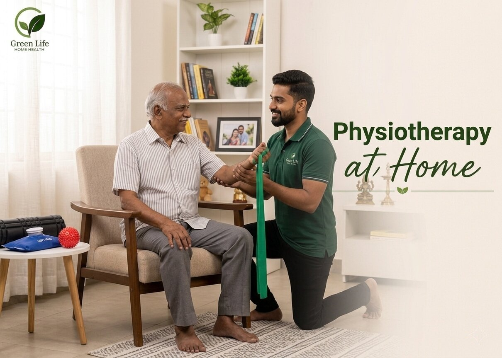

Assessment
The therapist reviews movement limits, pain areas, balance, strength and the patient’s confidence level before beginning exercises. This keeps the plan realistic and avoids pushing the patient beyond what is safe.
Guided home rehabilitation to improve movement, confidence, strength and daily comfort.

Physiotherapy at home helps patients avoid travel strain while building mobility through planned exercises and gentle progress tracking.
Elderly patients, post operative patients, stroke recovery patients, and individuals experiencing stiffness, pain, or walking difficulty receive specialized home care support designed to improve mobility, comfort, and overall quality of life. This care focuses on assisting with daily activities, ensuring proper recovery through guided support, and reducing complications through continuous monitoring. It is especially helpful for patients who need rehabilitation and long-term assistance in a safe and familiar home environment.
The therapist reviews movement limits, pain areas, balance, strength and the patient’s confidence level before beginning exercises. This keeps the plan realistic and avoids pushing the patient beyond what is safe.
Exercises are chosen based on age, current strength, medical advice and recovery goals. The plan may focus on walking, joint movement, posture, balance or pain reduction depending on what the patient needs most.
Each session is guided patiently with attention to breathing, posture and controlled movement. The patient is encouraged without being rushed, so progress feels possible and not stressful.
Families are updated about improvement, effort, difficulty areas and the next exercises to continue. This helps recovery stay consistent between sessions and gives the family a clear sense of progress.
Guided stretches and mobility routines for joints and muscles.
Steady walking, fall prevention and posture correction support.
Gentle techniques to reduce stiffness and physical discomfort.
Progressive exercises for muscle regain and daily endurance.
Session records and recovery updates for family and doctor.
Book a home session for mobility, pain support or recovery guidance.